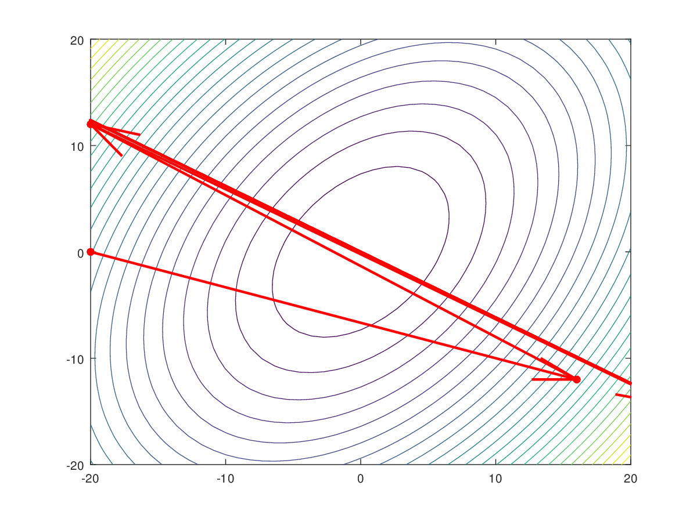

<!DOCTYPE html>
<html lang="en">
    <head>
        <meta charset="UTF-8">
        <meta name='description' content='An intuitive explanation of the gradient descent algorithm is given.' />
        <meta name='keywords' content='Gradient descent, Optimization' >
        <title>Gradient descent</title>
        <!-- Global site tag (gtag.js) - Google Analytics -->
        <script async src="https://www.googletagmanager.com/gtag/js?id=UA-112452759-1"></script>
        <script>
            window.dataLayer = window.dataLayer || [];
            function gtag() {
                dataLayer.push(arguments);
            }
            gtag('js', new Date());

            gtag('config', 'UA-112452759-1');
        </script>
        <!-- MathJax --> 
        <script type="text/x-mathjax-config">
            MathJax.Hub.Config({
            TeX: { equationNumbers: { autoNumber: "AMS" } }
            });
        </script>
        <script async src="https://cdnjs.cloudflare.com/ajax/libs/mathjax/2.7.2/MathJax.js?config=TeX-MML-AM_CHTML">
        </script>
        <!-- Styling -->
        <link href="../../css/styling.css" rel="stylesheet">
        <!-- Pseudocode.js and KaTex (required by Pseudocode) -->
        <link rel="stylesheet" href="../../pseudocode.js-1.1/pseudocode.min.css">
		<script src="../../pseudocode.js-1.1/pseudocode.min.js"></script>
				<link rel="stylesheet" href="https://cdnjs.cloudflare.com/ajax/libs/KaTeX/0.9.0/katex.min.css" integrity="sha384-TEMocfGvRuD1rIAacqrknm5BQZ7W7uWitoih+jMNFXQIbNl16bO8OZmylH/Vi/Ei" crossorigin="anonymous">
        <script src="https://cdnjs.cloudflare.com/ajax/libs/KaTeX/0.9.0/katex.min.js" integrity="sha384-jmxIlussZWB7qCuB+PgKG1uLjjxbVVIayPJwi6cG6Zb4YKq0JIw+OMnkkEC7kYCq" crossorigin="anonymous"></script>
    </head>
    <body>
        <div class="header">
            <ol class="breadcrumb" vocab="http://schema.org/" typeof="BreadcrumbList">
  				<li property="itemListElement" typeof="ListItem">
  					<a target="_self" href="../../index.html" property="item" typeof="WebPage">
  						<span property="name">Hvidberrrg@GitHub</span>
  					</a>
  					<meta property="position" content="1">
  				</li>
  				<li property="itemListElement" typeof="ListItem">
  					<a target="_self" href="../../deep_learning_and_neural_networks.html" property="item" typeof="WebPage">
  						<span property="name">Deep learning</span>
  					</a>
  					<meta property="position" content="2">
  				</li>
  				<li property="itemListElement" typeof="ListItem">
  					<a target="_self" href="../optimization_and_backpropagation.html" property="item" typeof="WebPage">
  						<span property="name">Optimization and backpropagation</span>
  					</a>
  					<meta property="position" content="3">
  				</li>
  				<li property="itemListElement" typeof="ListItem">
  					<a target="_self" href="#" property="item" typeof="WebPage">
  						<span property="name">Gradient descent</span>
  					</a>
  					<meta property="position" content="4">
  				</li>
			</ol>
            <h1>Gradient descent</h1>
        </div>
        
        <div class="content">
        	<div class="bodytext">
        	<p>Gradient descent is a commonly used optimization algorithm in machine learning (as well as in other fields).
        	Generally speaking, gradient descent is an algorithm that minimizes functions. For a given a function and an initial input 
        	value to it, gradient descent iteratively moves towards an input value that minimizes the function, i.e. optimally
        	the gradient descent algorithm will terminate with a value where the function in question is at a minimum. 
        	</p>
        	
        	<p>Intuitively the gradient descent algorithm works by always following the steepest descending "slope" until a 
        	"level area" - or a minimum is reached*.
        	<span class="marginnote">* Unfortunately the obtained minimum can be just one of many minima, i.e. there is no 
        	guarantee that we end up in the global minimum when greedily following the steepest descent. Later we'll look 
        	into methods that can be used to mitigate this.</span>
            In order to gain full appreciation of gradient descent optimization we need to dive into the gory mathematical
            details of the gradient. In the following, concepts are introduced in their general, multi-dimensional form but  
            exemplified in 2 and 3 dimensions which hopefully gives a better intuition of what is going on. 
            </p>
            
            <h2 id="hed:understanding_the_gradient_vector">Understanding the gradient vector</h2>
            <p>The formal definition of the gradient of a function \(f : \mathbb{R}^{n} \to \mathbb{R}\) at point
            \(x \in \mathbb{R}^{n}\), denoted \(\nabla f(x)\), is:
            </p>
            
            $$\begin{equation}
            \label{eq:gradient_definition}
			\nabla f(x) = \begin{bmatrix} 
			\frac{\partial f(x)}{\partial x_1} \\
			\vdots  \\
			\frac{\partial f(x)}{\partial x_n}
			\end{bmatrix}
            \end{equation}$$
            
            <p>
            I.e. the gradient is an \(n\)-dimensional <a href="../mathematical_foundations/vectors_matrices_and_tensors.html#hed:vectors">
            vector</a> where the \(i\)-th element is the partial derivative&dagger; of
            \(f(x)\) with respect to \(x_i\), <span class="marginnote">&dagger; A 
            <a target="_blank" href="https://mathcs.clarku.edu/~djoyce/ma131/partials.pdf">partial derivative</a> of a function 
            of several variables is its derivative with respect to one of those variables, with the others held constant.</span>
            where \(x = (x_1, \ldots, x_n).\) Also \(f\) must be differentiable in order for the partial derivatives to exist.
            </p>
            
            <p>An intuitive interpretation of the gradient vector at a specific point \(x\) is that it's pointing in the 
            direction of greatest increase of the function \(f\), as each element of the gradient tells you how fast \(f(x)\) 
            is changing with respect to the <a href="https://en.wikipedia.org/wiki/Standard_basis" target="_blank">
            standard basis</a>. One then might wonder, if \(f\) could be changing faster with respect 
			to some other direction, but indeed it can be shown that the gradient vector \(\nabla f(x)\) 
            points in the direction of steepest ascent&ddagger;.
			<span class="marginnote">&ddagger; Proof can be found 
			<a target="_blank" href="https://mathcs.clarku.edu/~djoyce/ma131/directional.pdf">here</a>.</span>
			Of course, this also means that the opposite direction, \(−\nabla f(x)\), is the 
			direction of steepest descent.
            </p>
            
            <p>In summary, the gradient is a vector whose elements are the slope of the function along each of the coordinate axes,
            i.e. it's a multidimensional generalisation of the usual derivative of a one-dimensional function of a real variable. 
            </p>
        	
        	<h3 id="hed:gradient_vector_example">The gradient vector explained by an example</h3>
        	<p>Before continuing to the <a href="#hed:gradient_descent_algorithm">gradient descent algorithm</a> let's have
        	a look at the gradient vector for a function of two variables, and see how the gradient relates to its 3-dimensional 
        	surface plot. As an example we'll use an elliptic paraboloid function with domain \(\mathbb{R}^{2}\): 
        	</p>
        	
        	$$\begin{equation}
        	\label{eq:example_function}
            f(x,y) = 6x^{2} + 4y^{2} - 4xy
            \end{equation}$$
            
            <p>Where the partial derivatives with respect to \(x\) and \(y\) are</p>   
             
            $$\begin{equation}
            \label{eq:example_function_derivative_x}
            \frac{\partial f(x,y)}{\partial x} = 12x - 4y \notag
            \end{equation}$$    
            
            <p>and</p>
            
            $$\begin{equation}
            \label{eq:example_function_derivative_y}
            \frac{\partial f(x,y)}{\partial y} = 8y - 4x \notag
            \end{equation}$$    
            
            <p>Which according to \eqref{eq:gradient_definition} gives us a gradient vector of</p>
            
            $$\begin{equation}
            \label{eq:example_function_gradient}
			\nabla f(x,y) = \begin{bmatrix} 
			12x - 4y \\
			8y - 4x
			\end{bmatrix}
            \end{equation}$$	
                 	
        	<p><a href="#fig:gradient_vector_field_of_a_function">Figure 1</a> below shows the graph of our example function, 
        	\eqref{eq:example_function}, plotted along with its gradient vector field given by \eqref{eq:example_function_gradient}.
        	</p>
        	
        	<div class="figure" id="fig:gradient_vector_field_of_a_function">
            	
            	<span class="caption">Figure 1: Example function and its gradient vector field</span>
			</div>
        	
        	<p>The length and direction of the gradient vectors correspond to the slope of the function at the point of origin 
        	of each vector. It can be seen that the vectors die off around the "bottom" of the surface plot, culminating in a 
        	zero gradient at the (global) minimum located at \((x, y) = (0, 0)\).
        	</p>
        	
        	<p>Projected onto the \((x, y)\) plane you also see the contours of the function, where the the contour lines are 
        	isolines of constant function value (i.e. all points at a given contour line are of equal function value). The 
        	function contours can be compared to the contour lines known from cartography - on a map these lines join points of 
        	equal elevation (height) above a given level. This means that if you walk along a contour line the slope will be zero
        	(you'll be following the side of the valley), and if you walk perpendicular to the contour lines on a map the slope 
        	may be quite steep (as you're heading towards either the valley floor or top). And the closer the contour lines are 
        	together, the steeper the slope. Again this analogy fits very well with our function plot where the length of the gradient 
        	vectors increase as the function contours grow closer together because of the steeper slope. Also the direction of the 
        	gradient vectors are orthogonal to the function contours, indicating we're ascending the slope.
			</p>
        	
        	<h2 id="hed:gradient_descent_algorithm">The gradient descent algorithm</h2>
        	<p>From the above discussion it should be clear that, starting from some arbitrary location, you can find a 
        	(potentially local) minimum for a differentiable function by descending in the opposite direction of the gradient, 
        	i.e. in the direction given by  \(−\nabla f(x)\). Apart from knowing which direction to search next, we also need a 
        	step size determining how far we go in that particular direction. This step size needs to be chosen carefully - if 
        	it's too large we might actually "bounce out" of our minimum as we'll see in <a href="#subhed:step_size_matters">an example 
        	below</a>. If, on the contrary, our step size is too small we might descend at an excruciatingly slow pace.
        	</p>
        	
        	<p>More formally this method can be iteratively described as starting at some arbitrary point \(x^{(0)}\) and then, at 
        	every iteration \(k ≥ 0\), move from point \(x^{(k)}\) in the direction given by \(\Delta x^{(k)}\) with a step size of \(t_k\) 
        	to reach the next point \(x^{(k+1)} = x^{(k)} + t_k \cdot \Delta x^{(k)}\). As we are doing gradient descent, the direction 
        	we move is given by the negative gradient at the point, i.e. \(\Delta x^{(k)} = −\nabla f(x^{(k)})\). 
        	</p>
        	
        	<p>In summary, the iterative search of gradient descent can be described via the following recursive rule:
        	</p>
        	
        	$$\begin{equation}
            \label{eq:gradient_descent_recursive_rule}
			x^{(k+1)} = x^{(k)} - t_k \cdot \nabla f(x^{(k)})
            \end{equation}$$
            
            <p>Given that our objective is to minimize the function \(f\), one reasonable approach is to choose our step size
            \(t_k\) &mdash; when at a certain point \(x^{(k)}\) &mdash; in a manner that will minimize the value of \(f\) at the new point 
            \(x^{(k+1)}\), i.e. choose the step size that minimizes \(f(x^{(k+1)})\). Combining this with \eqref{eq:gradient_descent_recursive_rule}
            we can define the optimal step size, \(t^{optimal}_k\), formally as:
            </p>
            
            <span class="marginnote">Where \(argmin\) is the <em>argument of the minimum</em>. As a simple example,
            \(argmin_x (f(x))\) is the value of \(x\) for which \(f(x)\) attains its minimum.</span>
            
            $$\begin{equation}
            \label{eq:gradient_descent_step_size}
			t^{optimal}_k = argmin_{t \geq 0}(x^{(k)} - t \cdot \nabla f(x^{(k)}))
            \end{equation}$$
            
            <p>For now we'll assume that we are able find an appropriate step size (not necessarily the optimal one as 
            it can be computationally expensive). Below we'll look into a few examples to see the <a href="#subhed:step_size_matters">
            effect of varying the step size</a>.</p>

        	<h3>The algorithm</h3>
        	<p>
        	When a function is at a minimum its gradient will vanish, i.e. if we keep repeating the recursive rule 
        	\eqref{eq:gradient_descent_recursive_rule} until the gradient becomes sufficiently small we'll know that 
        	we are close to a minimum. 
        	</p>
        	<p>Formally we define <a href="#gradient_descent_pseudocode">the gradient descent 
        	algorithm</a> as described below, where the "sufficiently small" from the previous paragraph is formalized 
        	as the desired precision \(\epsilon > 0.\) As mentioned above, we'll assume that we are able
        	to find a feasible step size \(t_k\).
        	</p>
        	
        	<div id="gradient_descent_pseudocode_tex" style="display:none;">
			\begin{algorithm}
			\caption{Gradient descent}
			\begin{algorithmic}
			\STATE Choose an arbitrary starting point $x^{(0)}$
			\STATE $k \gets 0$
			\WHILE{$\lVert \nabla f(x^{(k)}) \rVert > \epsilon$}
				\STATE $x^{(k+1)} \gets x^{(k)} - t_k \cdot \nabla f(x^{(k)})$
				\STATE $k \gets k + 1$
			\ENDWHILE
			\RETURN $x^{(k)}$
			\end{algorithmic}
			\end{algorithm}
			</div>
			<div id="gradient_descent_pseudocode"></div>
    
    		<p>
    		The size of the gradient is given by the <a href="../mathematical_foundations/vectors_matrices_and_tensors.html#hed:vector_norm">
    		<em>vector norm</em></a> \(\lVert \nabla f(x) \rVert\) - for now it suffices to think of the norm 
    		as the Euclidean length of the gradient vector.      
    		</p>


			<h3 id="hed:gradient_descent_algorithm_example">Gradient descent illustrated by an example</h2>
			<p>
			Let's illustrate the gradient descent algorithm by applying it to our example function \eqref{eq:example_function}
			(defined as \(f(x,y) = 6x^{2} + 4y^{2} - 4xy\)). We'll start out at \((x, y) = (-20, 0)\), compute the
			gradient as specified by \eqref{eq:example_function_gradient} and apply the <a href="#gradient_descent_pseudocode">
			gradient descent algorithm</a> using a fixed step size of \(0.02\). The results of the first few iterations
			of the algorithm are listed in the table below. 
			
			<table>
            	<thead>
            		<tr>
            			<th>\(k\)</th>
            			<th>\(\frac{\partial f(x,y)}{\partial x}\)</th>
            			<th>\(\frac{\partial f(x,y)}{\partial y}\)</th>
            			<th>\(x\)</th>
            			<th>\(y\)</th>
            			<th>\(f(x,y)\)</th>
            		</tr>
            	</thead>
            	<tbody>
            		<tr>
            			<td>0</td>
            			<td>N/A</td>
            			<td>N/A</td>
            			<td>-20</td>
            			<td>0</td>
            			<td>2400</td>
            		</tr>
            		<tr>
            			<td>1</td>
            			<td>-240 \(=12\cdot(-20)-4\cdot0\)</td>  
            			<td>80 \(=8\cdot0-4\cdot(-20)\)</td> 
            			<td>-15.2 \(=-20-0.02\cdot(-240)\)</td>
            			<td>-1.6 \(=0-0.02\cdot80\)</td>
            			<td>1299.2</td>
            		</tr>
            		<tr>
            			<td>2</td>
            			<td>-176 \(=12\cdot(-15.2)-4\cdot(-1.6)\)</td>
            			<td>48 \(=8\cdot(-1.6)-4\cdot(-15.2)\)</td>
            			<td>-11.68 \(=-15.2-0.02\cdot(-176)\)</td>
            			<td>-2.56 \(=-1.6-0.02\cdot48\)</td>
            			<td>725.146</td>
            		</tr>
            		<tr>
            			<td>3</td>
            			<td>-129.92</td>
            			<td>26.24</td>
            			<td>-9.0816</td> 
            			<td>-3.0848</td> 
            			<td>420.857</td>
            		</tr>
            		<tr>
            			<td>4</td>
            			<td>-96.64</td>
            			<td>11.648</td>
            			<td>-7.1488</td>
            			<td>-3.31776</td>
            			<td>255.79</td>
            		</tr>
            		<tr>
            			<td>5</td>
            			<td>-72.51456</td>
            			<td>2.05312</td>
            			<td>-5.69851</td>
            			<td>-3.35882</td>
            			<td>163.404</td>
            		</tr>
            	</tbody>
            </table>
            </p>
            
			<p>
			The numbers from the table are illustrated visually in <a href="#fig:gradient_descent_example">figure 2</a> where the
			red dots in the x,y-plane correspond to the x,y-values calculated for the gradient descent algorithm
			above, while the red "balls" rolling down the surface towards the minimum of the function
			represent the values of the function \(f\) for these inputs. 
			</p>
			
			<div class="figure" id="fig:gradient_descent_example">
            	
            	<span class="caption">Figure 2: Example of gradient descent</span>
			</div>
			
			<p>
			If we continue applying the gradient descent algorithm to our example function the resulting
			x,y-pairs will gravitate towards \((0,0)\) where the minimum of the function is located. This should be 
			fairly evident from the figure above but might be better illustrated by <a href="#fig:gradient_descent_small_steps">
			figure 3</a> that does away with the surface of the function and focuses on its contour map only. The function
			and gradient descent step size are the same for both figures. 
			</p>
			
        	<h3 id="subhed:step_size_matters">Step size matters</h3>	
        	<p>
        	As mentioned above it's not always possible to apply the optimal step size as it might be computationally expensive
        	to calculate it. But we have to be careful when choosing step sizes - if chosen too small our progress might
        	grind to a halt as the gradient tapers off on a plateau, while too large step sizes might hurl us right past
        	the minimum we are searching for. This is illustrated in the figures below that all show the contour map for our
        	example function \eqref{eq:example_function} along with the path traversed by gradient descent at various step sizes.
        	</p>
        	
        	<p>The first example illustrates gradient descent with a small step size. This descent follows the gradient
        	of our test surface very closely, but also moves very slowly when we get close to the minimum (if we were 
        	allowed only to repeat our descent algorithm for a set number of steps, one could easily imagine the algorithm
        	finishing before getting close to the actual minimum).
        	</p>
        	<div class="figure" id="fig:gradient_descent_small_steps">
            	
            	<span class="caption">Figure 3: Gradient descent using a small step size</span>
			</div>
        	
        	<p>The next example shows the path traversed by gradient descent using a step size 5 times larger than the
			step size used above. As we can see this results in a much faster - but also more erratic - descent. Still,
			as the descent gets "trapped by" the minimum of the function, the steps get smaller as the gradient tends 
			towards \(0\) around the minimum.
			</p>
        	<div class="figure" id="fig:gradient_descent_efficient_step_size">
            	
            	<span class="caption">Figure 4: Gradient descent with an "efficient" step size</span>
			</div>
			
			<p>The final example illustrates gradient descent using a step size 50% larger than in the previous example.
			The erratic behaviour has spun completely out of control, hurling the "descent" back and forth, overshooting the
			minimum while moving ever farther away from it.
			</p>
			<div class="figure" id="fig:gradient_descent_large_steps">
            	
            	<span class="caption">Figure 5: Gradient descent using too large a step size</span>
			</div>
						
        	<h3>Getting stuck at a local minimum</h3>
        	<p>When working with gradient descent optimization you have to be aware there is no guarantee
        	that the algorithm finds the global minimum - if your function has several minima, gradient descent
        	might as well lead you to a local minimum.
        	</p>
        	<div class="figure" id="fig:multiple_minima">
            	
            	<span class="caption">Figure 6: Function with multiple minima</span>
			</div>
			
			<p>If you consider the function with multiple minima illustrated above, you'll see that gradient
			descent not necessarily brings you to the global minimum (located approximately at \((0,-2)\)).
			Depending on where you start out, you might as well end in the local minimum on the left
			(approximately at \((-2,0)\)). Or if using a small step size, the algorithm might leave you
			in the shallow minimum located around \((0,0)\).
			</p>
        	
        	<h2 id="hed:references">References</h2>
			<p>
			<ul class="bibliography">
			    <li id="Boyd2004">[Boyd2004]&nbsp;&nbsp;&nbsp;Stephen Boyd &amp; Lieven Vandenberghe,
        		<a href="https://web.stanford.edu/~boyd/cvxbook/bv_cvxbook.pdf" target="_blank"><cite>Convex Optimization</cite></a>,
        		Cambridge University Press, <time datetime='2004'>2004</time>
        		</li>
			    
			    <li id="Joyce2014">[Joyce2014]&nbsp;&nbsp;&nbsp;David E. Joyce,
        		<a href="https://mathcs.clarku.edu/~djoyce/ma131/directional.pdf" target="_blank">
        		<cite>Math 131 Multivariate Calculus - Directional derivatives, steepest ascent, tangent planes</cite></a>,
        		Clark University, <time datetime='2014'>2014</time>
        		</li>
			
        		<li id="Singer2016">[Singer2016]&nbsp;&nbsp;&nbsp;Yaron Singer,
        		<a href="https://people.seas.harvard.edu/~yaron/AM221-S16/lecture_notes/AM221_lecture9.pdf" target="_blank">
        		<cite>Advanced Optimization: Gradient descent algorithm - Strong convexity, analysis of convergence</cite></a>,
        		Harvard University, <time datetime='2016'>2016</time>
        		</li>
			</ul>
	 
			</p>
  	
        	</div>
    	
        	<div class="margin">
        	<p>
        		<a class="margin" href="/deep_learning/activation_functions_in_artificial_neural_networks.html">Activation&nbsp;Functions</a>
        	</p>
        	<p>
        		<a class="margin" href="/deep_learning/optimization_and_backpropagation.html">Optimization&nbsp;&amp;&nbsp;backpropagation</a>
        	</p>
        	<p>
        		<a class="margin" href="/deep_learning/mathematical_foundations_of_deep_learning.html">Mathematical&nbsp;Foundations</a>
        	</p>
        	<p>
        		<a class="margin" href="/deep_learning/resources_and_references.html">Resources&nbsp;&amp;&nbsp;references</a>
        	</p>
        	</div>
        	
        </div>
        
        <script>
    		var code = document.getElementById("gradient_descent_pseudocode_tex").textContent;
			var parentEl = document.getElementById("gradient_descent_pseudocode");
			var options = {
    			lineNumber: true
			};
			pseudocode.render(code, parentEl, options);
    </script>     

    </body>
</html>
